VSCode的智能好用之处
自动更新import语句
当从已有的一个文件，复制并改名后，VSCode可以自动检测出来，提示是否需要更新import语句
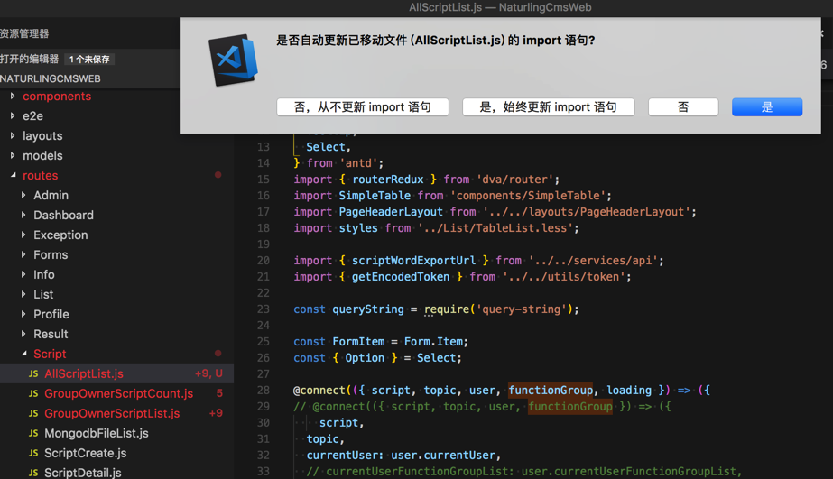
即可自动更新import语句：
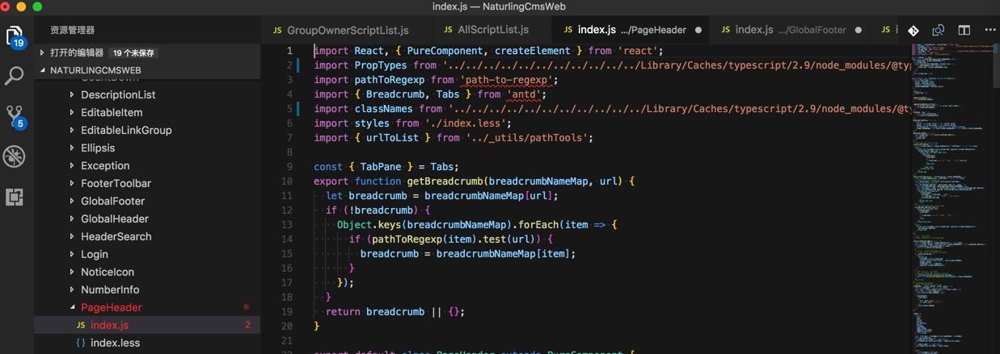
不过，此处更新后的内容不是我要的，竟然把本来正常的都改错误了，所以还要自己去改回来。以后慎用这个自动修改import的功能。
快速跳转文件
Command + P后，输入（部分）文件名（支持模糊搜索）：
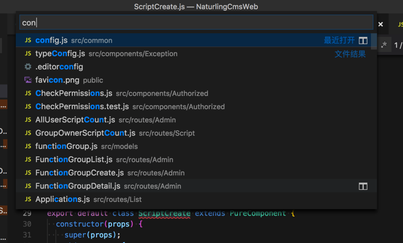
选中回车即可跳转文件：
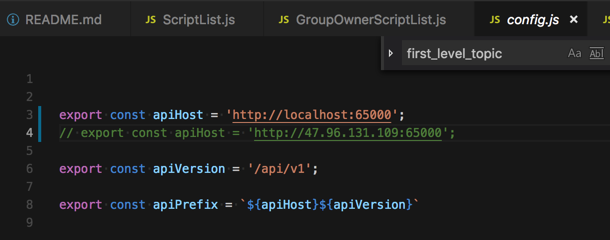
log日志中点击文件路径可以跳转到该文件
比如调试期间出错了，点击对应log错误日志中的文件路径：
File "/usr/local/lib/python3.6/site-packages/rest_framework/views.py", line 483, in dispatch
response = self.handle_exception(exc)
File "/usr/local/lib/python3.6/site-packages/rest_framework/views.py", line 443, in handle_exception
self.raise_uncaught_exception(exc)
File "/usr/local/lib/python3.6/site-packages/rest_framework/views.py", line 480, in dispatch
response = handler(request, *args, **kwargs)
File "/Users/crifan/dev/dev_root/company/naturling/projects/xxx/server/xxx/apps/script/views.py", line 136, in create
if i['type'] == '0':
TypeError: string indices must be integers
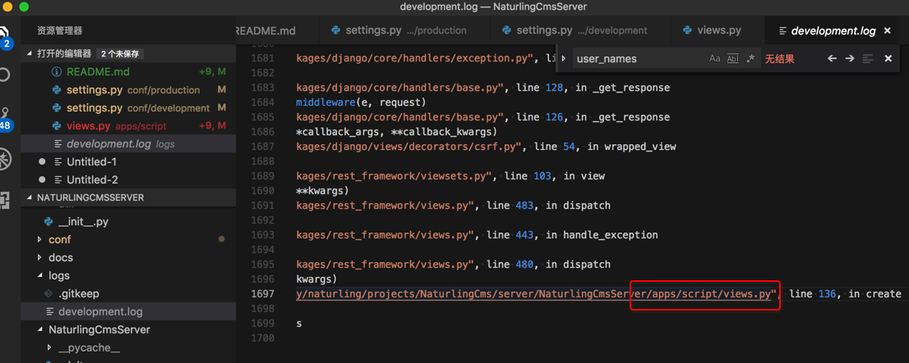
可以跳转到对应的文件：
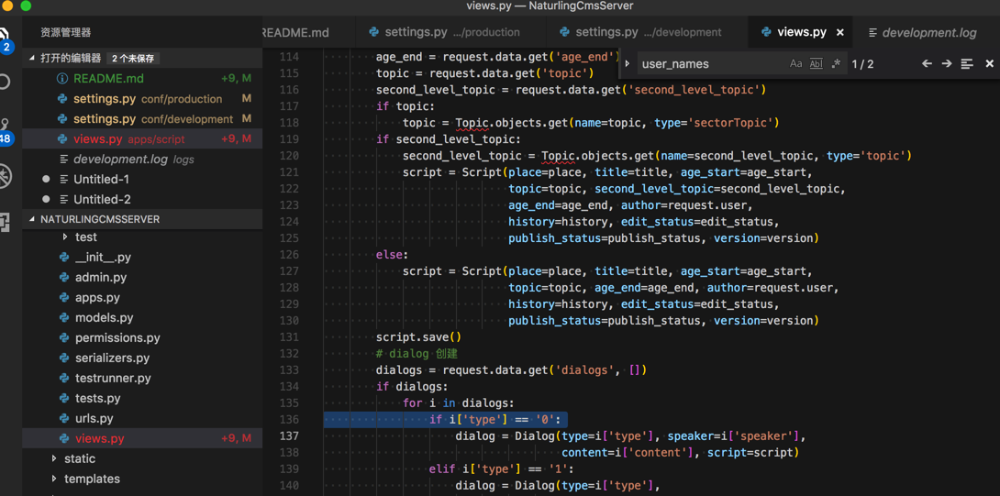
方便调试。
提示安装支持相应文件的插件
首次打开.env，则提示是否要安装.env的插件，点击 搜索商店：
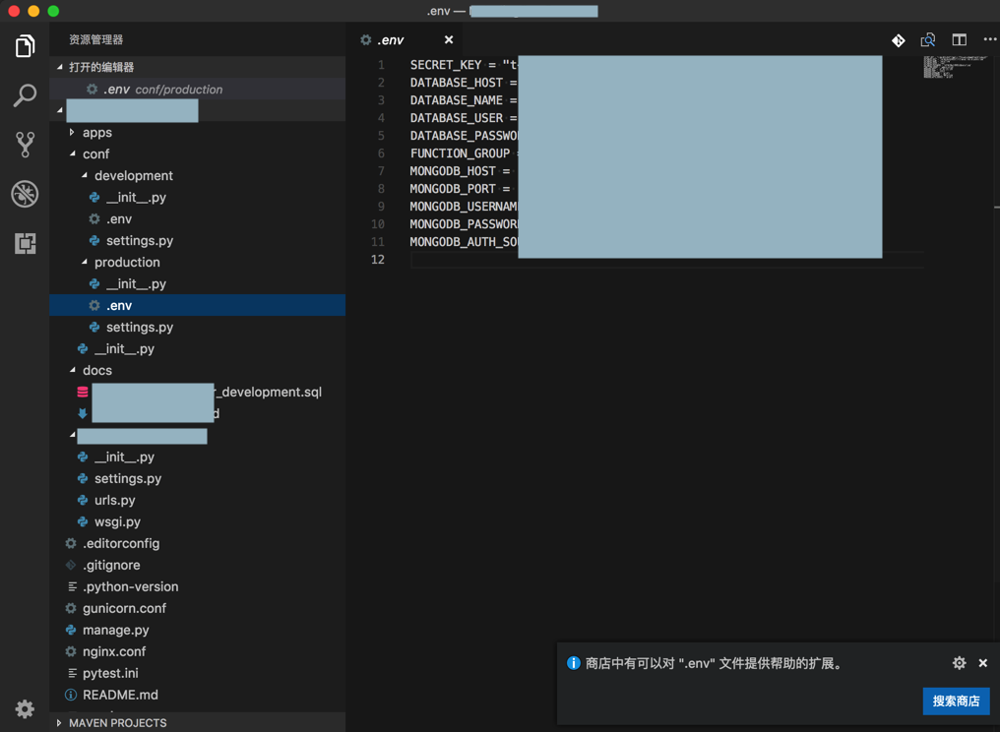
然后点击安装插件：
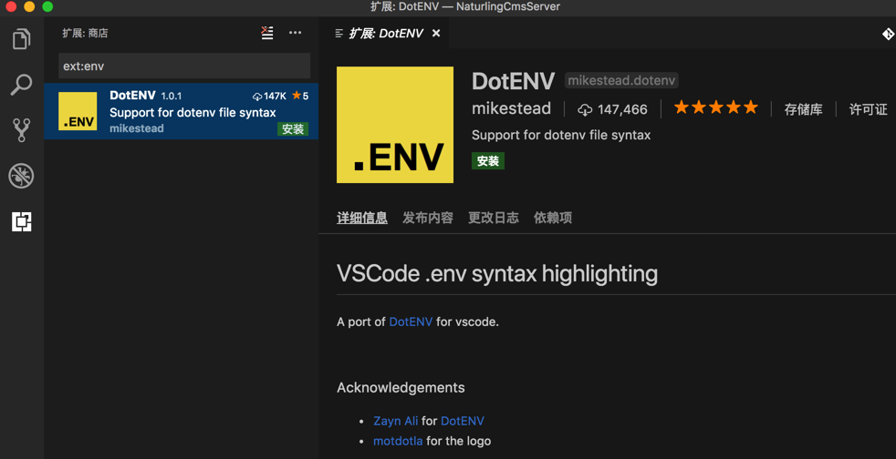
安装后，重启加载：
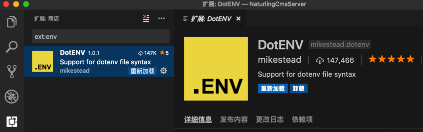
然后.env就可以语法高亮了：
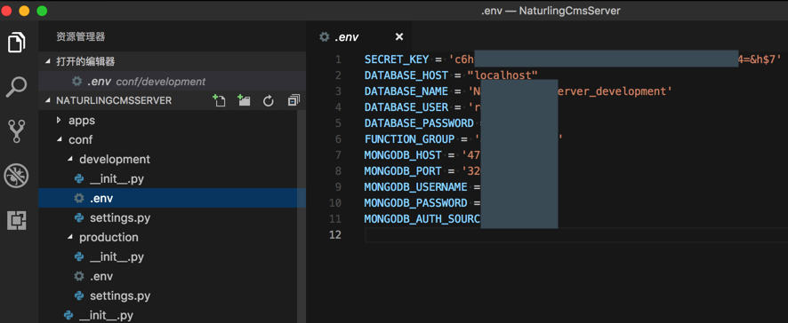
另外类似的情况还有：
首次打开vue提示安装对应的插件：
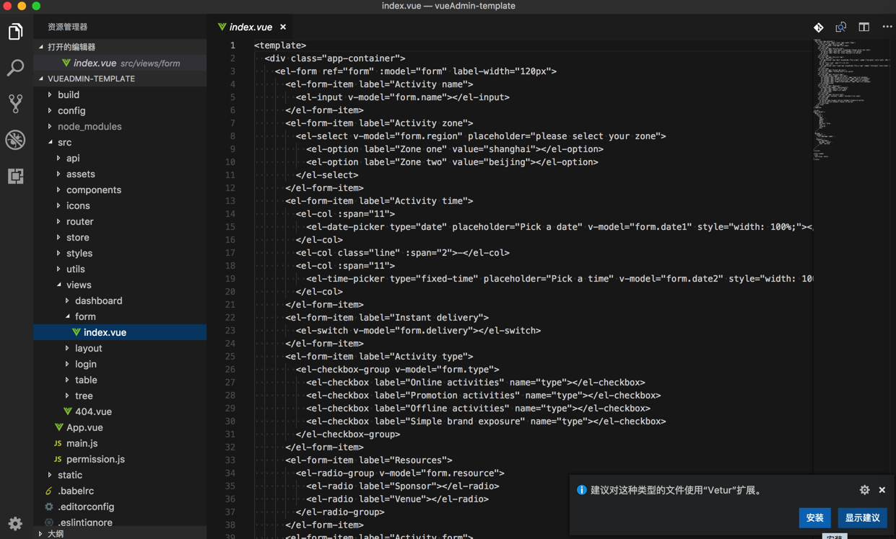
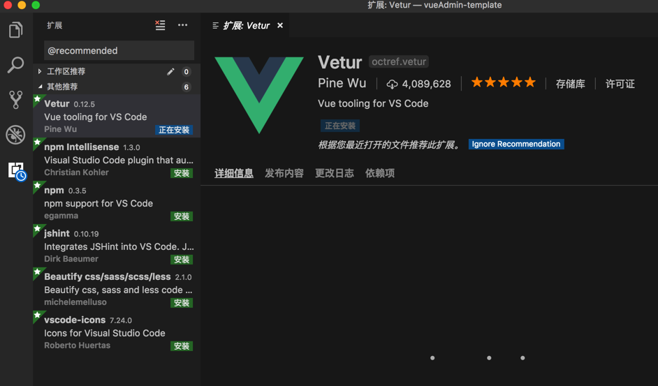
根据路径动态提示文件
刚新建个文件夹，加入了几个js文件后，然后再去html中输入路径后，即可动态匹配路径和文件：
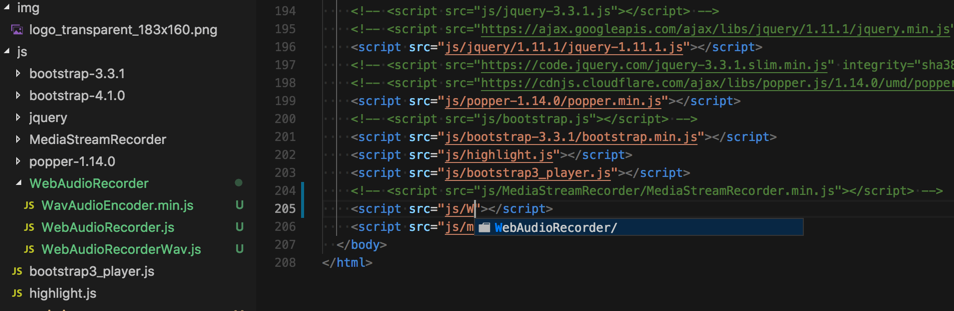
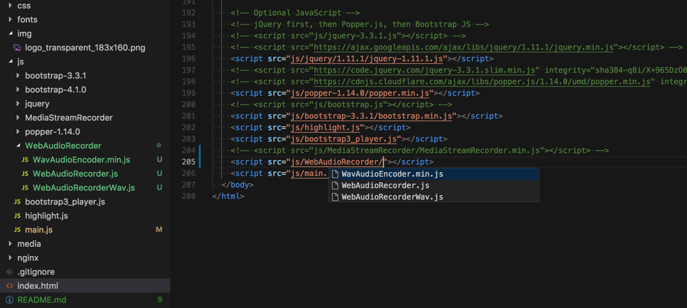
很是智能和贴心。
显示大纲
VSCode 1.24版本支持支持大纲=Outline=目录：
Preview: Outline view - Symbol tree outline and navigation for your projects.
右键项目条，选中 大纲：
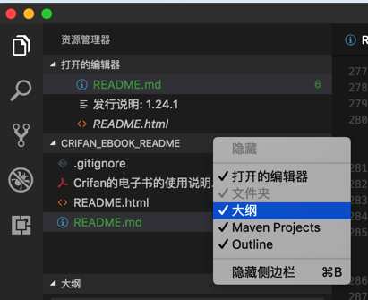
点击大纲中的某行后，可以跳转到对应位置，比如：
- Markdown：
- 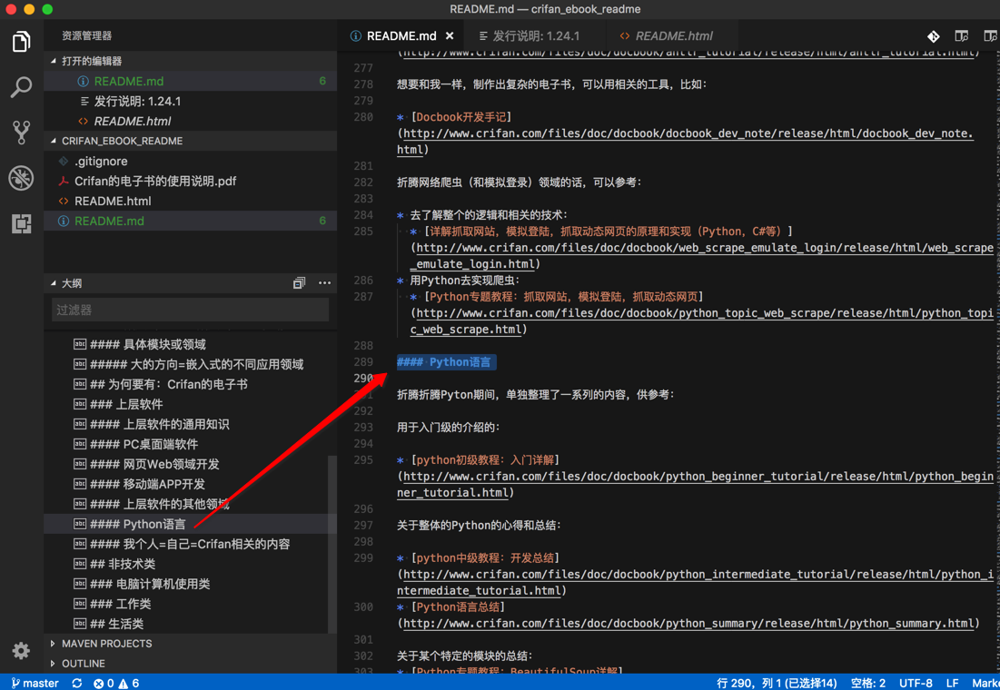
- Html
- 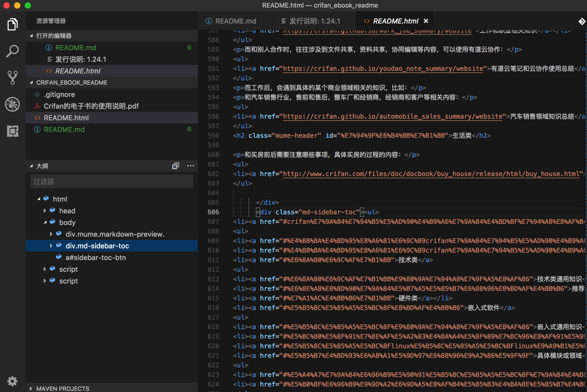
未使用变量检测
VSCode 1.24版本支持支持自动检测未使用的变量的提示：
Unused variable detection - Unused variables are greyed-out in your JavaScript/TypeScript files